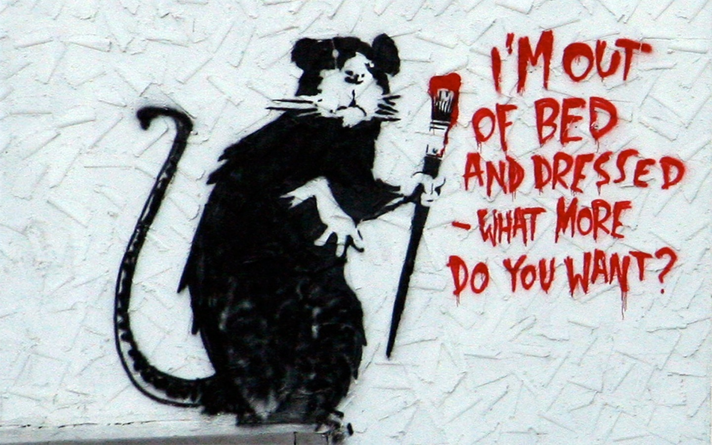

Banksy
Who Is Banksy?
Banksy is a pseudonymous England-based street artist, political activist and film director whose real name and identity remain unconfirmed and the subject of speculation. Active since the 1990s, his satirical street art and subversive epigrams combine dark humour with graffiti executed in a distinctive stenciling technique. His works of political and social commentary have appeared on streets, walls and bridges throughout the world.
Identity
During his early years, Banksy was anonymous for fear of being prosecuted for the criminal damage inflicted by his street art. Nowadays, he continues to paint covertly to dodge the limelight and protect that air of mystery so distinctive to graffiti artists. There are many theories surrounding the identity of Banksy, but the most prominent one suggests that the artist is a man by the name of Robin Gunningham. Gunningham was born in 1973 in Yate, just outside of Bristol, and many former schoolmates say they believe him to be Banksy.
The Most Expensive Artworks
- Devolved Parliament
- Love is in the Air
- Show me the Monet
- Forgive Us Our Trespassing
- Subject to Availability
Links
- Official website
- Pest Control – Official Banksy authentication service and only current official dealer of original Banksy works
- Official Banksy Instagram page
- Official Banksy YouTube channel
All the information on this page is taken from Wikipedia article Created in 2023.